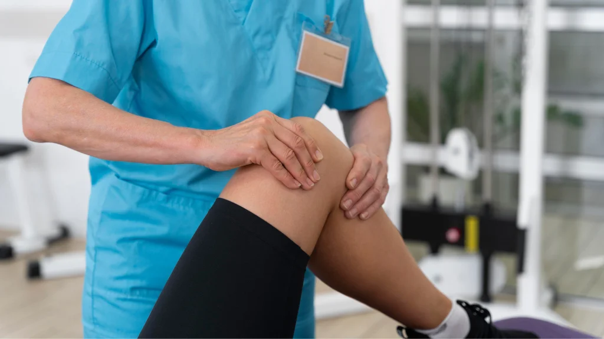

How Much Does ACL Surgery Cost in India?
An injury to the anterior cruciate ligament (ACL) in the knee can sideline anyone, from athletes to everyday folks. When the ACL tears or ruptures, it often leads to instability and pain. ACL reconstruction surgery replaces the damaged ligament with a graft, restores knee stability, and helps patients resume their normal activities.
In India, the cost of this procedure varies widely. Understanding the factors that influence the price can help you plan effectively and make informed decisions about your care.
What Is ACL Reconstruction Surgery?
ACL reconstruction is a surgical procedure that repairs a torn ligament in the knee. During the operation, a surgeon removes the damaged ACL and replaces it with a graft. This graft often comes from the patient's own tissue, commonly a strip of tendon from the hamstring or patellar tendon or from a donor.
The surgeon uses small instruments and a camera (arthroscopy) to guide the graft placement, making the procedure minimally invasive. Following surgery, patients undergo structured rehabilitation to regain strength and range of motion. Physical therapy is vital to ensure a full recovery and reduce the risk of further injury.
When Do You Need ACL Surgery?
Not every ACL tear calls for surgery. Non-surgical options like bracing and therapy can work for some patients. However, doctors often recommend reconstruction when:
- The ACL tear causes repeated knee instability ("giving way").
- You live an active lifestyle or play heavy sports.
- You experience chronic pain or swelling after the injury.
- You have other knee injuries, such as meniscus tears.
- Bracing and rehabilitation fail to restore knee stability.
An orthopedic surgeon evaluates your knee stability, activity level, and personal goals before advising surgery.
Average Cost of ACL Surgery in India
The typical cost for ACL reconstruction in India ranges from ₹1,50,000 to ₹3,50,000. This includes hospital charges, surgeon fees, graft preparation, anesthesia, and basic post-surgery care. In some metro hospitals with premium facilities, the upper range can go up to ₹6,00,000, especially if advanced techniques or robotic assistance are used. In smaller cities or tier-2 towns, costs may fall closer to ₹80,000 to ₹2,50,000, reflecting lower hospital and living expenses.
Factors Influencing the Cost
Location of Treatment
Major cities like Mumbai, Delhi, Bengaluru, and Chennai typically charge more than tier-2 or tier-3 cities due to higher living and operating costs.
Choice of Hospital
Multi-specialty and private hospitals with private rooms and advanced infrastructure cost more than smaller clinics or government-supported facilities.
Surgeon's Expertise
A highly experienced orthopedic surgeon or a sports medicine specialist may command higher fees, reflecting their skill and success rates.
Types of ACL Reconstruction Procedures
Surgeons can choose from several ACL reconstruction methods. Each technique has specific steps, benefits, and cost factors. Understanding these options can help you discuss the best approach with your orthopedic surgeon.
Arthroscopic ACL Reconstruction
The surgeon makes two to four small incisions (about 1 cm each) around the knee. A tiny camera (arthroscope) and special tools enter through these cuts.
Procedure Steps
- Insert the camera to view the inside of the knee on a screen.
- Remove any damaged ACL remnants.
- Drill small tunnels in the femur (thigh bone) and tibia (shin bone).
- Pass the graft through these tunnels and secure it with screws or buttons.
Advantages
- Less damage to surrounding tissues.
- Reduced post-operative pain.
- Smaller scars and quicker cosmetic healing.
Most patients begin gentle movement the day after surgery and can start weight-bearing with support within one week. Full return to sports often takes 6–9 months.
Autograft Reconstruction
The surgeon harvests a strip of the patient's own tendon—either the middle third of the patellar tendon (just below the kneecap) or one or two hamstring tendons (inside the back of the knee).
Procedure Steps
- Make a small incision to remove the tendon strip.
- Prepare the graft by trimming it to the right length and thickness.
- Place the graft through drilled tunnels in the bones, as in arthroscopic surgery.
Advantages
- Strong biological integration since it is the patient's own tissue.
- Lower risk of immune reaction or disease transmission.
Harvesting the tendon can cause mild donor-site pain or muscle weakness, but most patients recover these functions within months.
Allograft Reconstruction
The graft comes from a donor (cadaver) and is processed in a tissue bank to remove cells and reduce infection risk.
Procedure Steps
- Thaw and prepare the donor graft in the operating room.
- Drill bone tunnels and fix the graft similarly to autograft methods.
Advantages
- No second incision to harvest the patient's own tendon, reducing operative time and donor-site pain.
- Useful when the patient's own tendons are not strong enough or have been used previously.
Considerations
- Slightly higher risk of graft rejection or slower incorporation.
- Added cost for graft procurement and processing.
Revision ACL Surgery
Performed when a previous ACL reconstruction fails often due to graft rupture or improper tunnel placement.
Procedure Steps
- Remove old hardware (screws or buttons) and clean out scar tissue.
- Possibly perform a two-stage surgery: first to fill old tunnels, then to place new graft tunnels.
- Use autograft or allograft to reconstruct the ligament.
Considerations
- More complex due to scar tissue and altered anatomy.
- Longer surgery and higher cost.
- Recovery may take longer than a primary reconstruction.
Double-Bundle Reconstruction
The natural ACL has two functional bundles—anteromedial and posterolateral—that control different movements of the knee. Double-bundle surgery rebuilds both.
Procedure Steps
- Harvest two grafts (autograft or allograft).
- Drill four small bone tunnels—two in the femur and two in the tibia.
- Secure each graft bundle in its respective tunnel to mimic the ACL's natural anatomy.
Advantages
- May provide better rotational stability, reducing "pivot shift."
- Can feel more natural during cutting and twisting movements.
Considerations
- Requires more surgical time and graft material.
- Slightly higher cost due to extra fixation devices and longer operating room use.
- Not always necessary for less active patients.
Type of Procedure
Complex surgeries, such as revision ACL or double-bundle reconstruction, take longer and use more resources, increasing the overall cost.
Graft Selection
Allografts involve donor tissue processing, which adds to cost, whereas autografts use the patient's own tissue at minimal extra charge.
Diagnostic and Lab Tests
Detailed assessments like 3D MRI or additional blood tests before surgery raise preoperative costs.
Anesthesia and Operating Room Time
Longer surgeries accrue higher anesthesia charges and operating room occupancy fees.
Rehabilitation Intensity
Some patients require extended or intensive physiotherapy, which increases physiotherapy costs.
Insurance Coverage and Other Expenses
Most health insurance policies in India cover ACL reconstruction, as it's deemed medically essential. However, coverage details vary:
- Pre-Authorization Requirements: Insurers may require approval before surgery.
- Hospital Network: Cashless treatment is available if you choose a hospital within the insurer's network.
- Co-Pay and Deductibles: Some plans require you to pay a percentage of the total cost.
- Exclusions and Waiting Periods: Policies may have waiting periods before covering orthopedic surgeries.
Always confirm coverage details, including rehabilitation costs and any exclusions, to avoid surprises.
Tips to Manage ACL Surgery Costs
- Compare Hospitals: Check rates at both private and government hospitals.
- Negotiate Packages: Many hospitals offer bundled rates that include surgery, stay, and basic rehab.
- Use Insurance Wisely: Verify cashless options and co-pay details to minimize out-of-pocket spending.
- Consider Tier-2 Cities: Skilled surgeons often practice outside major metros at lower fees.
- Ask About Graft Options: If suitable, choose an autograft to save on donor tissue costs.
Why ACL Reconstruction Is Essential
ACL reconstruction surgery is not just about repairing a ligament; it's about restoring knee stability and function. Without a stable ACL, the knee can give way, causing frequent pain and limiting daily activities. Over time, an unstable knee may lead to cartilage damage and early-onset arthritis.
For active individuals and athletes, reconstruction allows a safe return to sports, reducing the risk of re-injury. Even for non-athletes, it helps maintain a normal lifestyle without the fear of knee collapse during routine movements.
Conclusion
ACL reconstruction is a life-changing procedure for many patients, enabling them to regain knee stability, strength, and confidence. In India, the cost of this surgery ranges widely, from around ₹80,000 in smaller towns to upwards of ₹6,00,000 in premium urban hospitals. By understanding the factors that influence cost—such as location, hospital choice, surgeon expertise, procedure type, and graft selection.
Always consult with an orthopedic surgeon to discuss your individual needs, insurance coverage, and payment options. With careful planning and the right medical team, you can achieve a successful outcome without financial stress.